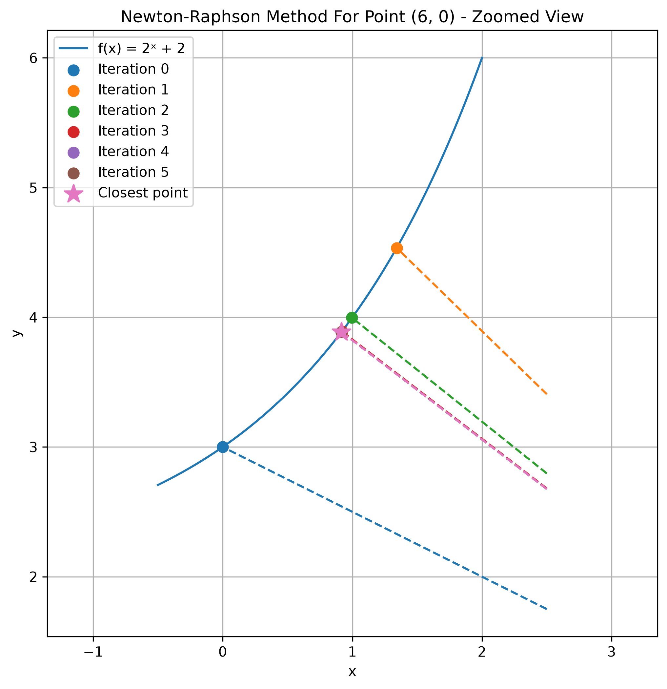

SYDE 572 - Assignment 1
Part 1: Find shortest distance from a point to a function
Analytical Approach
Given the function \(f(x) = x^2 + 5\) and the points \((0,0), (-4,0), (-8,0), (2,0), (6,0)\), we want to find the shortest distance from each point to the function.
We measure the distance using the Euclidean distance formula:
\[ d = \sqrt{(x - x_0)^2 + (f(x) - y_0)^2} \]
To simplify the calculations, we can minimize the squared distance instead of the actual distance. Both reach their minimum at the same point, so we can avoid working with the square root.
\[ D(x) = (x - x_0)^2 + (f(x) - y_0)^2 \]
To find the closest point, we take the derivative of the squared distance and set it to zero. This allows us to find where the distance is minimized.
Using \(f(x) = x^2 + 5\) and \(f'(x) = 2x\), we get:
\[ \begin{aligned} D'(x) &= 2(x-x_0) + 2(x^2+5)(2x) \\ &= 4x^3 + 22x - 2x_0 \end{aligned} \]
By hand: Point \((0,0)\)
Setting \(D'(x) = 0\) and substituting \(x_0 = 0\) gives:
\[ 0 = 4x^3 + 22x \]
Solving this equation gives \(x = 0\), and therefore \(f(0) = 5\).
Using the closest point \((0,5)\) and the given point \((0,0)\), the distance is:
\[ d = \sqrt{(0-0)^2 + (5-0)^2} = 5 \]
By hand: Point \((-4,0)\)
Setting \(D'(x) = 0\) and substituting \(x_0 = -4\) gives:
\[ 0 = 4x^3 + 22x + 8 \]
Solving this equation gives \(x \approx -0.3555\), and therefore \(f(-0.3555) \approx 5.1264\).
Using the closest point \((-0.3555, 5.1264)\) and the given point \((-4,0)\), the distance is:
\[ d = \sqrt{(-0.3555+4)^2 + (5.1264-0)^2} \approx 6.2898 \]
We can repeat this process for the other points and obtain the following results:
| Point | Closest x | Closest Point | Distance |
|---|---|---|---|
| (0, 0) | 0.0000 | (0.0000, 5.0000) | 5.0000 |
| (-4, 0) | -0.3555 | (-0.3555, 5.1264) | 6.2898 |
| (-8, 0) | -0.6721 | (-0.6721, 5.4517) | 9.1334 |
| (2, 0) | 0.1807 | (0.1807, 5.0327) | 5.3514 |
| (6, 0) | 0.5199 | (0.5199, 5.2703) | 7.6031 |
Newton-Raphson Method
To use the Newton-Raphson method, we need the first and second derivatives of the squared distance function \(D(x)\). We also need an initial guess for \(x\) and a tolerance level to determine when to stop iterating.
Recall that the squared distance function is:
\[ D(x) = (x - x_0)^2 + (f(x) - y_0)^2 \]
Given \(f(x) = x^2 + 5\), \(f'(x) = 2x\), and \(f''(x) = 2\), the derivatives of \(D(x)\) are:
\[ \begin{aligned} D'(x) &= 4x^3 + 22x - 2x_0 \\ D''(x) &= 12x^2 + 22 \end{aligned} \]
We update \(x\) using the Newton-Raphson formula:
\[ x_{n+1} = x_n - \frac{D'(x_n)}{D''(x_n)} \]
We start with the initial guess \(x_0 = 0.0\) and continue iterating until the change between two consecutive estimates is smaller than the tolerance \(1 \times 10^{-7}\):
\[ |x_{n+1} - x_n| < 10^{-7} \]
By hand: Point \((0, 0)\)
| Iteration | \(x\) | \(D'(x)\) | \(D''(x)\) | Next \(x\) |
|---|---|---|---|---|
| 0 | 0.000000 | 0.000000 | 22.000000 | 0.000000 |
The method converges to \(x = 0\), giving the closest point \((0, f(0)) = (0, 5)\).
The shortest distance between the given point \((0, 0)\) and the closest point \((0, 5)\) is:
\[ d = \sqrt{(0-0)^2 + (5-0)^2} = 5 \]
By hand: Point \((-4, 0)\)
| Iteration | \(x\) | \(D'(x)\) | \(D''(x)\) | Next \(x\) |
|---|---|---|---|---|
| 0 | 0.000000 | 8.000000 | 22.000000 | -0.363636 |
| 1 | -0.363636 | -0.192337 | 23.586777 | -0.355482 |
| 2 | -0.355482 | -0.000288 | 23.516409 | -0.355470 |
| 3 | -0.355470 | 0.000000 | 23.516304 | -0.355470 |
The method converges to \(x = -0.3555\), giving the closest point \((-0.3555, f(-0.3555)) \approx (-0.3555, 5.1264)\).
The shortest distance between the given point \((-4, 0)\) and the closest point is approximately:
\[ d = \sqrt{(-0.3555 + 4)^2 + (5.1264 - 0)^2} \approx 6.2898 \]
Generated: Point \((-8, 0)\)
Using the Newton-Raphson code from newton-raphson.ipynb, we obtained the following iterations:
| Iteration | \(x\) |
|---|---|
| 0 | 0.000000 |
| 1 | -0.727273 |
| 2 | -0.672992 |
| 3 | -0.672078 |
| 4 | -0.672078 |
The method converges to \(x = -0.6721\), giving the closest point \((-0.6721, 5.4517)\).
The shortest distance from \((-8, 0)\) to the function is approximately 8.9920.


The graphs show the Newton-Raphson iterations gradually converging to the closest point on the function.
Explore non-polynomial functions
We explore the Newton-Raphson method on non-polynomial functions, such as the exponential function.
Given f(x) = 2x + 2 and f'(x) = 2x * ln(2) and point (6, 0), we have
D'(x) = 2(x - 6) + 2(2x + 2) · 2xln(2) D''(x) = 2 + 2[2xln(2)]2 + 2(2x + 2)2x[ln(2)]2
We update x using the Newton-Raphson formula:
| Iteration | x | D'(x) | D''(x) | Next x |
|---|---|---|---|---|
| 0 | 0.000000 | -7.841117 | 5.843624 | 1.341824 |
| 1 | 1.341824 | 6.618021 | 19.218482 | 0.997467 |
| 2 | 0.997467 | 1.056127 | 13.497187 | 0.919219 |
| 3 | 0.919219 | 0.039362 | 12.507160 | 0.916072 |
| 4 | 0.916072 | 0.000060 | 12.469320 | 0.916067 |
| 5 | 0.916067 | 0.000000 | 12.469263 | 0.916067 |
Notice that the method converges to x ≈ 0.9161 with f(0.9161) ≈ 3.8870.
Given closest point (0.9161, 3.8870) and the given point (6, 0), the shortest distance is approximately 6.3996.


Golden Section Search
The Golden Section Search method minimizes the squared distance without requiring the derivative of the function.
Additional Functions
The numerical methods were also tested on non-polynomial functions, including exponential, logarithmic, and radical functions.
Part Two: Fitting to an Equation
Given Data
The following points are used to fit a line and a parabola:
(0, 0.5), (2, 3.5), (1, 1.5), (3, 7.5)
Line Fit
We fit a line of the form y = c0 + c1x by minimizing the mean squared error.
Parabola Fit
We fit a parabola of the form y = c0 + c1x + c2x2 by minimizing the mean squared error.